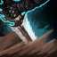

核心裝備
 奪魄之鐮
奪魄之鐮 殞落王者之劍
殞落王者之劍 多明尼克的問候
多明尼克的問候 死亡之舞
死亡之舞 守護天使
守護天使
以下為本站 7.2d 校正後的標準配置；實戰仍需依敵方陣容調整。


技能優先：Q > W > E
在草叢或偽裝狀態下，下一次普攻可跳向目標。施放基礎技能累積殘虐值，滿層後強化下一個基礎技能；不同英雄的擊殺或助攻會提高物攻。

強化接下來的普攻並提高攻速，第一下造成額外物理傷害且視為暴擊。強化版本提供更高攻速與額外傷害，是主要爆發與清野技能。
對周圍敵人造成魔法傷害，並回復近期承受傷害的一部分。強化版本還能移除自身控制，是雷葛爾反打與保命關鍵。
投擲繩索造成物理傷害與緩速，並揭露命中區域。強化版本會定身目標；跳躍途中也能施放。
提高跑速、揭露最近的敵方英雄並進入偽裝，期間可從遠處跳向目標；首次跳擊會降低目標物防。
草叢跳擊 → 空中3技 → 1技重置 → 2技 → 強化1技
從草叢起跳並在空中丟三技，落地後快速打完三個基礎技能，滿殘虐再用強化一技完成爆發。
4技偽裝 → 跳擊降防 → 空中3技 → 1技 → 強化1技
大絕接近時先判斷目標是否有控制；若風險高，可把滿層殘虐留給強化二技解控。
草叢跳擊 → 1技 → 2技 → 3技 → 強化3技定身
需要配合隊友而非單殺時，將強化技能留給三技，定身能讓後續控制與傷害更穩定。
利用草叢跳躍縮短清野移動並快速累積殘虐值。第一輪清野後可在河道草叢主動找單挑，但要先規劃好強化技能：需要爆發用強化一技，需要解控或回血則保留強化二技。
五級後頻繁用大絕搜尋落單後排，進場前確認戰利品項鍊尚未取得的英雄，兼顧擊殺與被動成長。大絕跳躍時可在空中施放三技，落地立刻接一技重置普攻。
正面五對五容易被控制與保排化解，應先清理視野、從側翼或草叢等待。若無法秒殺核心，就用強化三技定身或強化二技解控後撤，不要把所有技能一次交空。
對局名單是本站依英雄機制與目前配置整理的參考，不等同固定勝率。
打野先維持標準刷野與節奏裝，只有敵方陣容或我方前排需求明顯時才調整。
觸發：敵方前排多，物件團與正面團戰會長時間卡在高生命目標上。
斷切能直接提高對高生命敵人的普攻傷害。
觸發：敵方能在你進場或搶物件前快速把你秒掉。
魔提斯深淵提供魔防與低血量魔法護盾，比單純增加輸出更能保住進場或持續輸出。
骨甲直接降低同一名敵人接續幾次技能或普攻的傷害。
觸發：進場或搶物件時經常被控制鏈直接中斷節奏。
先購買水銀飾帶取得主動解控，之後再合成水星彎刀；水銀飾帶是合成組件，不是另一件要與水星彎刀互換的成裝。
犧牲部分輸出型傳奇符文，換取韌性與緩速抗性。
觸發：敵方前排、鬥士或吸血核心能在物件團長時間回復。
致死宣告兼顧暴擊、穿透與重創，適合射手在不拆核心輸出邏輯下補反治療。
觸發：我方陣容沒有可靠第一承傷點，團戰需要有人更早進場吸收注意力。
這隻英雄不適合為了「缺前排」硬改成主坦；維持自己的輸出／功能，讓巴龍路或輔助補前排更合理。
提醒：「缺前排」不代表所有打野都要改坦裝；刺客、法師與射手打野硬轉坦通常會失去英雄價值。
7.2a 打野正式版：技能名稱依 Riot Games 台灣《激鬥峽谷》雷葛爾英雄頁校正；出裝、符文、技能順序與草叢清野方向交叉參考 WildRiftFire 7.2a。Tier 與對局為本站綜合評級。｜v53：完成打野第二批正式版，完整套用李星固定母版，補齊起手裝、核心三件、五件成裝、技能加點、三組連招、對局與前中後期節奏。
本站於 2026-08-27 依 Patch 7.2d 重新檢查此配置。 Tier、出裝、符文與對局屬於 Wild Rift Guide 的整理與分析，不是 Riot Games 官方推薦；版本改動後會再依官方公告與實戰資料校正。